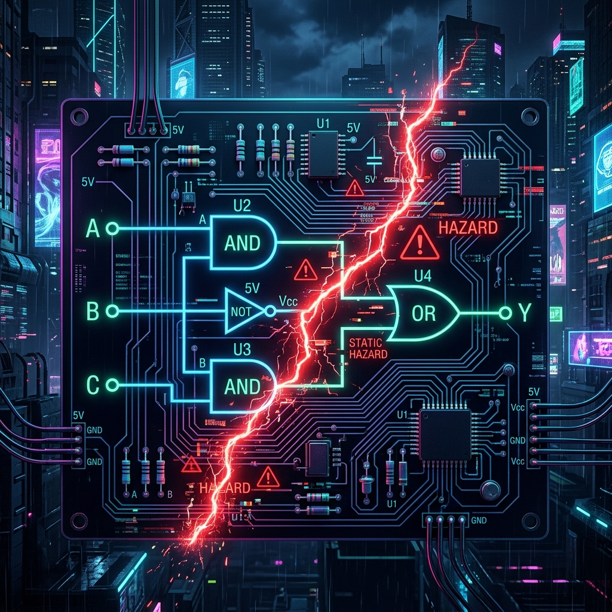

Modern microprocessors are marvels of synchronous execution, marching to the relentless beat of a master clock oscillator. Millions, sometimes billions, of times per second, the central processing unit (CPU) fetches an instruction, decodes its binary intent, executes the necessary arithmetic or logical operations, and writes the result back to memory or registers. This pipeline, when uninterrupted, is a perfect deterministic machine. But the real world is neither synchronous nor deterministic. Devices like keyboards, network interfaces, storage drives, and timers operate on their own unpredictable schedules. For a CPU to effectively interact with this chaotic external environment without wasting cycles continuously checking (polling) for updates, it requires a mechanism to immediately respond to asynchronous events. This mechanism is known as the interrupt.
Furthermore, internal execution isn't immune to unpredictability. An instruction might attempt to divide by zero, access an invalid or protected memory address, or execute an undefined opcode. These internal anomalies require immediate attention to prevent system crashes or security breaches. These synchronous, internally generated events are called exceptions. Together, interrupts and exceptions form the foundation of modern operating system architecture, enabling preemptive multitasking, hardware abstraction, and robust error recovery.
Synchronous Exceptions vs. Asynchronous Interrupts
To fully grasp the architecture of event handling, we must first distinguish between exceptions and interrupts, though they share much of the same underlying hardware mechanisms.
Exceptions are synchronous events generated by the CPU itself during the execution of an instruction. They are predictable in the sense that executing the exact same instruction with the same state will always produce the same exception. Exceptions can be further classified into three categories:
- Faults: These are exceptions that can potentially be corrected, and execution can resume from the instruction that caused the fault. A classic example is a page fault, where the CPU tries to access a virtual memory address not currently mapped to physical memory. The operating system's page fault handler will load the necessary page from disk and resume execution at the exact same instruction.
- Traps: Traps are deliberate exceptions, usually invoked by a special instruction (like
INTin x86 orSYSCALLin x86-64/ARM). They are used to transition from user mode to kernel mode to request operating system services. When a trap occurs, the return address points to the instruction after the trap instruction. - Aborts: These are severe, unrecoverable hardware errors, such as a machine check exception caused by memory corruption or parity errors. The only viable response is usually to halt the system or panic the kernel to prevent further damage.
Interrupts (specifically hardware interrupts), on the other hand, are asynchronous events triggered by external hardware via electrical signals on specific CPU pins. They are entirely independent of the currently executing instruction. A network card receiving a packet or a system timer ticking does not care what the CPU is doing; it simply asserts an interrupt signal. Because they are asynchronous, the CPU must check for pending interrupts at specific points in its instruction pipeline, typically at instruction boundaries.

The Architecture of an Interrupt Controller
A typical modern CPU has very few physical pins dedicated to interrupts (e.g., INTR and NMI on early x86). However, a system may have dozens of peripherals requiring interrupt service. To manage this many-to-few mapping, systems employ an Interrupt Controller, such as the classic 8259A Programmable Interrupt Controller (PIC) or the modern Advanced Programmable Interrupt Controller (APIC).
The interrupt controller acts as a multiplexer and prioritizing arbiter. When a peripheral needs attention, it asserts a specific Interrupt Request (IRQ) line connected to the interrupt controller. The controller evaluates the request against its internal configuration. If the interrupt is unmasked and has a higher priority than the currently servicing interrupt (if any), the controller asserts the main interrupt pin (INTR) on the CPU. Once the CPU acknowledges the interrupt via an Interrupt Acknowledge (INTA) bus cycle, the controller places an interrupt vector (an 8-bit number) on the data bus, which tells the CPU exactly which peripheral caused the interrupt.
IRQ Lines, Priorities, and Masking
Each hardware device is assigned (statically or dynamically via protocols like PCI/PCIe MSI) to one or more IRQ lines. Because multiple IRQs can fire simultaneously, the interrupt controller must resolve contention based on priority. Typically, lower IRQ numbers have higher priority. For instance, the system timer (IRQ 0) often has the highest priority to maintain system time and scheduling accuracy.
A crucial feature of interrupt management is the ability to mask (ignore) specific interrupts. This is essential for preventing interrupt storms, prioritizing critical sections of code, and disabling unused peripherals. The interrupt controller contains an Interrupt Mask Register (IMR), where each bit corresponds to an IRQ line. If a bit is set (or cleared, depending on the architecture), the corresponding IRQ is masked and will not trigger the CPU, even if the peripheral asserts it.
Hardware Interrupt Mask Logic Circuit
At the silicon level, an interrupt mask is fundamentally implemented using a combination of flip-flops (the register) and logic gates (typically AND/NAND gates). The hardware interrupt signal from the device is logically AND-ed with the inverted mask bit. If the mask bit is 0 (unmasked), the inverted signal is 1, and the AND gate allows the IRQ signal to pass through to the priority encoder. If the mask bit is 1 (masked), the AND gate outputs 0, completely blocking the IRQ.
Below is a SQGATE JSON snippet representing a simplified 4-bit hardware interrupt mask circuit using standard logic gates. This configuration uses a 4-bit input representing raw IRQs, a 4-bit input representing the mask register, and outputs the masked IRQs.
{
"metadata": {
"name": "4-Bit Interrupt Mask Logic",
"description": "Hardware logic for masking 4 IRQ lines using a Mask Register",
"version": "1.0"
},
"nodes": [
{ "id": "irq_bus", "type": "input_bus", "width": 4, "label": "Raw IRQ Lines [3:0]" },
{ "id": "mask_reg", "type": "input_bus", "width": 4, "label": "Interrupt Mask Reg [3:0]" },
{ "id": "not0", "type": "not", "label": "Invert Mask 0" },
{ "id": "not1", "type": "not", "label": "Invert Mask 1" },
{ "id": "not2", "type": "not", "label": "Invert Mask 2" },
{ "id": "not3", "type": "not", "label": "Invert Mask 3" },
{ "id": "and0", "type": "and", "label": "Mask Gate 0" },
{ "id": "and1", "type": "and", "label": "Mask Gate 1" },
{ "id": "and2", "type": "and", "label": "Mask Gate 2" },
{ "id": "and3", "type": "and", "label": "Mask Gate 3" },
{ "id": "split_irq", "type": "split4", "label": "Split IRQ" },
{ "id": "split_mask", "type": "split4", "label": "Split Mask" },
{ "id": "merge_out", "type": "merge4", "label": "Merge Masked" },
{ "id": "masked_irq_bus", "type": "output_bus", "width": 4, "label": "Masked IRQ [3:0]" }
],
"edges": [
{ "source": "irq_bus", "target": "split_irq", "targetPort": "in" },
{ "source": "mask_reg", "target": "split_mask", "targetPort": "in" },
{ "source": "split_mask", "sourcePort": "out0", "target": "not0", "targetPort": "in" },
{ "source": "split_mask", "sourcePort": "out1", "target": "not1", "targetPort": "in" },
{ "source": "split_mask", "sourcePort": "out2", "target": "not2", "targetPort": "in" },
{ "source": "split_mask", "sourcePort": "out3", "target": "not3", "targetPort": "in" },
{ "source": "split_irq", "sourcePort": "out0", "target": "and0", "targetPort": "in1" },
{ "source": "not0", "target": "and0", "targetPort": "in2" },
{ "source": "split_irq", "sourcePort": "out1", "target": "and1", "targetPort": "in1" },
{ "source": "not1", "target": "and1", "targetPort": "in2" },
{ "source": "split_irq", "sourcePort": "out2", "target": "and2", "targetPort": "in1" },
{ "source": "not2", "target": "and2", "targetPort": "in2" },
{ "source": "split_irq", "sourcePort": "out3", "target": "and3", "targetPort": "in1" },
{ "source": "not3", "target": "and3", "targetPort": "in2" },
{ "source": "and0", "target": "merge_out", "targetPort": "in0" },
{ "source": "and1", "target": "merge_out", "targetPort": "in1" },
{ "source": "and2", "target": "merge_out", "targetPort": "in2" },
{ "source": "and3", "target": "merge_out", "targetPort": "in3" },
{ "source": "merge_out", "target": "masked_irq_bus", "targetPort": "in" }
]
}In this SQGATE layout, the active-high mask bits are first inverted so that a 1 (masked) becomes a 0, completely shutting off the AND gate logic regardless of what the IRQ line is asserting. The resultant vector is then passed on to a priority encoder (not shown) to determine which remaining active IRQ requires immediate servicing.
The Context Switch: Silicon Meets Software
When the CPU acknowledges an interrupt, a fascinating sequence of events occurs at the boundary between hardware execution and software management. This process is highly latency-sensitive; modern processors are designed to minimize interrupt latency—the time between the hardware asserting the signal and the CPU executing the first instruction of the handler.
First, the CPU must not leave its current state corrupted. Before jumping to the handler, it must save a "snapshot" of its current execution context. This generally involves pushing the current Program Counter (PC) or Instruction Pointer (EIP/RIP) and the Status Register (EFLAGS/RFLAGS) onto the current stack. Some architectures (like ARM) save this information in banked link registers instead of immediately hitting main memory, significantly reducing latency.
Furthermore, the CPU automatically disables further interrupts (clearing the interrupt enable flag) to prevent the interrupt handler itself from being interrupted before it has safely saved the remaining state. The CPU then consults the Interrupt Descriptor Table (IDT) or Vector Table using the vector number provided by the controller. This table contains the memory addresses of all the Interrupt Service Routines (ISRs). The CPU loads the PC with the address of the specific ISR and switches to a privileged execution mode (Kernel Mode/Ring 0), as handling hardware requires unrestricted access.
The Interrupt Service Routine (ISR)
The code that executes in response to the interrupt is the Interrupt Service Routine (ISR). An ISR operates under strict constraints. Because it preempts whatever the CPU was doing (potentially user space programs or other kernel tasks), it must be incredibly fast and deterministic. A sluggish ISR can cause the system to miss subsequent interrupts (like dropping network packets) or make the UI feel unresponsive.
A well-architected ISR is usually split into two halves: the "Top Half" and the "Bottom Half" (in Linux terminology, also known as deferred procedure calls or tasklets).
- The Top Half: This is the immediate interrupt handler. It executes with interrupts disabled. Its sole responsibility is to acknowledge the hardware (telling the device to stop asserting the IRQ line), grab necessary volatile data from the hardware buffers (e.g., pulling a packet from the NIC's FIFO), and immediately schedule the Bottom Half to do the heavy lifting.
- The Bottom Half: This is a deferred routine scheduled by the Top Half. It executes later, with interrupts enabled, allowing the system to remain responsive to other hardware. The Bottom Half processes the data retrieved by the Top Half, updates kernel data structures, and perhaps wakes up sleeping processes waiting for that I/O.
Once the Top Half concludes, it must restore the CPU state precisely as it found it. It pops the saved registers, restores the Status Register (which inherently re-enables interrupts), and executes a special return instruction (like IRET in x86 or RTE). This instruction pops the saved PC back into the Instruction Pointer, seamlessly resuming the interrupted program.
Advanced Pipeline Considerations: Flushing and Bubbles
In advanced superscalar architectures, the pipeline complexity introduces massive headaches for interrupt handling. A modern CPU might have dozens of instructions in flight simultaneously, scattered across multiple execution units at various stages (Fetch, Decode, Issue, Execute, Retire).
When an asynchronous interrupt arrives, exactly where in the pipeline does the CPU stop? Microarchitects use the concept of precise interrupts. To maintain a precise state, all instructions that entered the pipeline before the interrupted instruction must complete and commit their results to architectural state. Conversely, all instructions after the interrupt point (which might already be partially executed) must be flushed from the pipeline. This pipeline flush introduces a massive performance penalty, often creating dozens of "bubbles" (NOPs) in the pipeline while the CPU fetches the first instructions of the ISR from cache or memory.
For exceptions, the situation is even more complex. If an ADD instruction in the Execute stage triggers an overflow trap, the CPU must ensure that later instructions (which might be in the Decode stage) are flushed, but earlier instructions (which might be in the Retire stage) are finished. The Reorder Buffer (ROB) plays a critical role here, tracking instruction order and ensuring that state is only committed if no exceptions occurred prior to that instruction in program order.
Nested Interrupts and Priority Inversion
In complex real-time systems, it is often necessary to allow interrupts to interrupt other interrupts. This is called nested interrupt handling. For example, a high-priority timer interrupt should be allowed to preempt a low-priority keyboard interrupt handler.
To implement this safely, the ISR must carefully re-enable interrupts early in its execution, but only after masking its own IRQ and all lower-priority IRQs at the interrupt controller level. This prevents an infinite loop of a device constantly interrupting its own handler, overflowing the kernel stack. However, nested interrupts introduce the risk of priority inversion, where a high-priority task is indirectly preempted by a lower-priority task, a classic problem in real-time OS design that requires complex priority inheritance protocols.
Non-Maskable Interrupts (NMI) and System Watchdogs
While the ability to mask interrupts is vital for critical section management, certain hardware events are so catastrophic that the CPU must acknowledge them regardless of its current state. These are routed via the Non-Maskable Interrupt (NMI) pin. By definition, an NMI cannot be ignored by clearing the interrupt enable flag in the status register.
NMIs are reserved for dire situations: unrecoverable hardware failures, memory parity errors, or signals from a hardware watchdog timer. A watchdog timer is an independent piece of silicon designed to detect software deadlocks. The operating system must periodically "kick" or reset the watchdog. If the OS hangs and fails to reset the timer before it expires, the watchdog asserts the NMI line. The NMI handler, operating in a highly restricted environment (as it cannot trust the current stack or kernel state), will typically attempt to dump diagnostic information (like a kernel panic log or a blue screen of death) to non-volatile storage before initiating a hard reset of the system.
Handling an NMI is notoriously difficult. Because an NMI can strike at literally any instruction—even while the CPU is in the middle of context-switching for a standard interrupt or modifying crucial page tables—the NMI handler must be entirely self-contained. It usually relies on a dedicated, pre-allocated memory stack (an Interrupt Stack Table in x86-64) to prevent stack corruption if the NMI occurred during a stack pivot.
Message Signaled Interrupts (MSI) in Modern PCIe Architectures
In modern computer architectures, the physical IRQ pins and centralized interrupt controllers are increasingly becoming legacy holdovers. The advent of PCI Express (PCIe) brought about Message Signaled Interrupts (MSI and MSI-X). Instead of a device toggling a dedicated copper trace to signal an interrupt, it simply performs a memory-write transaction over the PCIe bus to a specific memory address reserved for the local APIC of a target CPU core.
This architecture has profound advantages. First, it eliminates the need for physical interrupt routing pins across the motherboard, simplifying layout. Second, it resolves interrupt sharing issues; in older systems, multiple PCI devices had to share a single IRQ line, requiring the OS to query each device to determine the culprit. With MSI, a single device can allocate dozens of unique interrupt vectors (e.g., one vector for each queue in a multi-queue network card), allowing different CPU cores to independently handle traffic for different queues without contention. This transition from out-of-band electrical signals to in-band memory writes represents a paradigm shift in advanced hardware interrupt routing.
Real-World Implications: The Foundation of Multitasking
Without the interrupt mechanism, modern computing as we know it would be impossible. When you move your mouse, an interrupt tells the CPU to update the cursor position. When data arrives over Wi-Fi, an interrupt tells the networking stack to process the packet. Most crucially, the OS kernel relies on a periodic timer interrupt (the scheduling tick) to preempt currently running user-space applications. Every few milliseconds, the timer interrupt fires, returning control to the kernel, which then decides if a different process should get CPU time. This illusion of simultaneous execution across hundreds of processes is entirely driven by the hardware interrupt architecture.
Understanding how interrupts propagate from the physical pins, through the logic gates of the interrupt mask, into the silicon pipeline, and up to the OS kernel provides a profound appreciation for the intricate dance of hardware and software that powers our digital world.